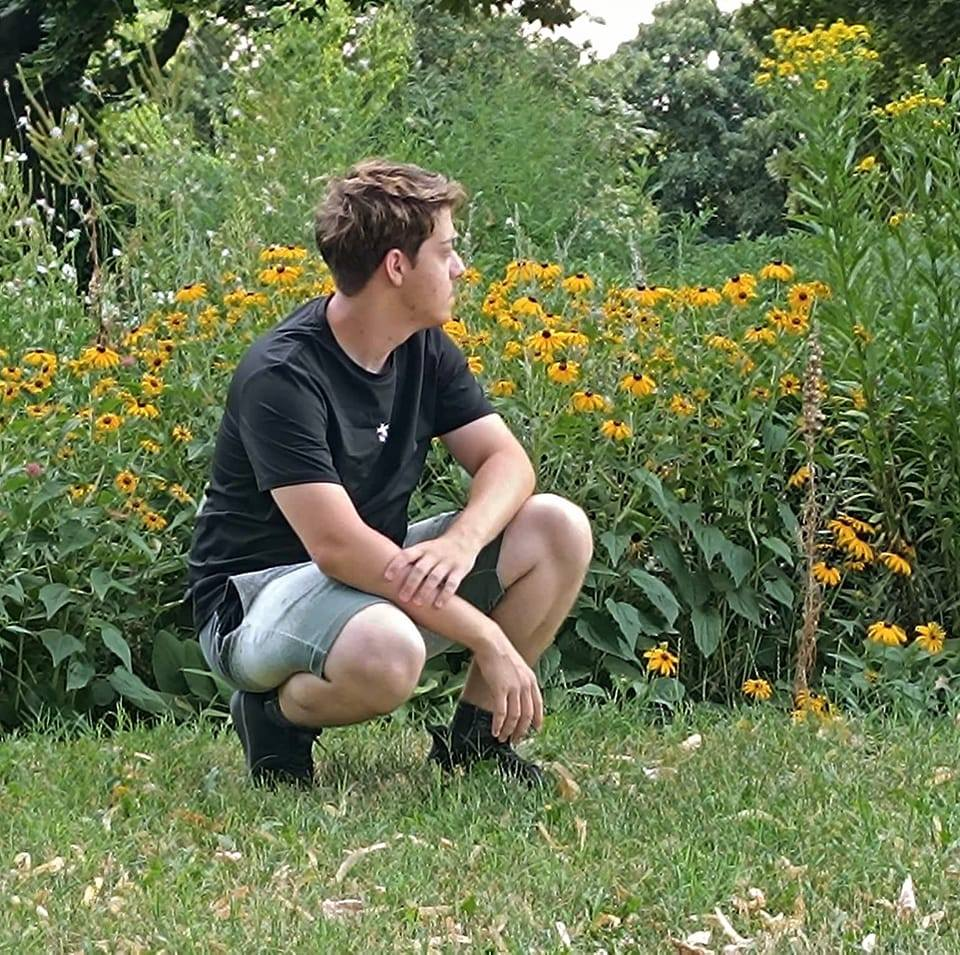

Daroczi Attila
Frontend Fejlesztő(akar lenni!)
Frontend Fejlesztő(akar lenni!)
A nevem Daroczi Attila, és jelenleg programozást tanulok, hogy a jövőben frontend fejlesztővé váljak. A technológia és a webfejlesztés világa mindig is lenyűgözött, ezért döntöttem úgy, hogy ebbe az irányba indulok el. Jelenleg HTML, CSS és JavaScript alapjaival ismerkedem, de szeretnék elmélyülni a modern frontend keretrendszerek, például a React és a Vue.js használatában is.
A kódolás mellett nagyon fontos számomra a kreativitás és a folyamatos fejlődés. Nagyon szeretek új dolgokat tanulni, kihívásokkal szembesülni, és olyan projekteken dolgozni, amelyek nemcsak fejlesztik a tudásomat, hanem valódi értéket is teremtenek. Célom, hogy egyszer olyan weboldalakat és alkalmazásokat hozzak létre, amelyek esztétikusak, gyorsak és felhasználóbarátok.
A szabadidőmben szeretek a természetben lenni és zenét hallgatni. A friss levegő és a szép tájak mindig feltöltenek energiával, a zene pedig inspirál és segít kikapcsolódni. Hiszem, hogy a kiegyensúlyozott életmód, a tanulás és a pihenés egyensúlya kulcsfontosságú a sikerhez.
Remélem, hogy a jövőben még többet tanulhatok és fejlődhetek ezen a területen, és alig várom, hogy csatlakozhassak egy kreatív fejlesztői közösséghez.